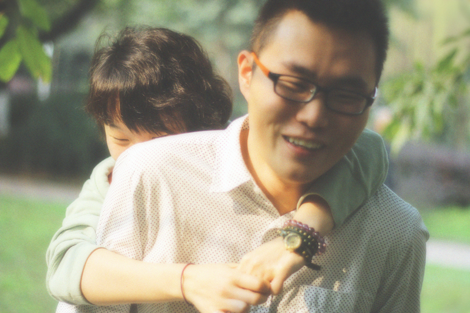

正文: 【干货】摄影师分享各种摄影实战技巧。
看了不后悔看了不后悔看了不后悔 说三遍！
P1：我妹妹。11岁，开始正面拍她，你想，一般人面对镜头都会腼腆，羞射，不好意思。
然后我就说妹妹 你往前走，我叫321，你回头看镜头，笑，开心的笑。
于是有了这照片。
P2：一样，开始别看镜头，看前方，321，往右看镜头，开心的笑。
有时候你可以讲点笑话，或者你大笑，模特也会跟着你笑。我相信：笑会传染。
P3：拍一半脸，有点神秘感。这个是为朋友拍的，4年前，到现在，依然是她的手机桌面。
 P4：如果是2个或以上被拍者，让他们玩，闹。然后你会捕捉到最真实的笑容。
P4：如果是2个或以上被拍者，让他们玩，闹。然后你会捕捉到最真实的笑容。
P5：有时候抿嘴羞射也能显示出年轻小的女生的可爱，青春。
P6：情侣对看，相爱的眼神，那种发自内心的笑容 骗不了人。
P7：依然是回头，海边。在厦门拍摄的一个客人。
P8：有时候腼腆羞涩的笑会让你印象深刻。P9：给她讲笑话，会笑不停，那个时候你要赶紧按快门！！！
比起拍笑脸，我更喜欢拍“非主流”的忧伤系列（人家叫“情绪风”）。
先上几张哭的。哈哈
1、
2、
3、
其实情绪风就是煽动模特情绪，让她哭出来。
或者哭不出来借助眼药水吧。哈哈。
（我在上班呢，领导在旁边，还码了这么多。不点赞？还在犹豫？你给我站住，别跑！）